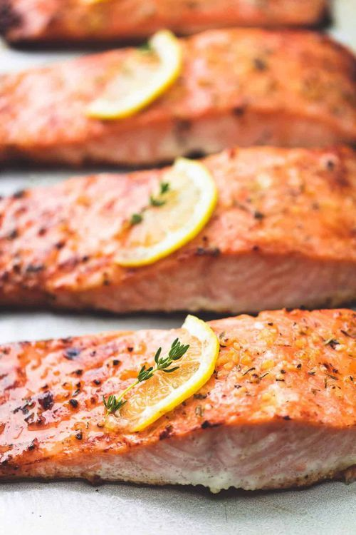

Salmon Recipe
Home

🐟 Featured Recipe: Glazed Garlic Butter Salmon
Our salmon is a beautifully pan-seared fillet with a crispy, golden-brown crust that gives way to a tender, juicy center.
Each bite is rich and buttery, with a melt-in-your-mouth texture that pairs perfectly with the sweet and savory garlic glaze.
The flavor is bold yet balanced—deeply savory with notes of caramelized garlic, a touch of lemon for brightness, and a hint of honey that enhances the natural richness of the fish.
Whether you're a seafood lover or trying salmon for the first time, this dish is comforting, satisfying, and full of flavor.
Perfect alongside roasted vegetables, fluffy rice, or a crisp green salad.
Ingredients
2 salmon fillets (skin-on or skinless, about 6 oz each)
2 tablespoons butter
3 cloves garlic, minced
1 tablespoon honey
1 tablespoon soy sauce
1 tablespoon lemon juice (fresh is best)
Salt and black pepper, to taste
1 tablespoon olive oil (for searing)
Optional garnish: chopped parsley, lemon slices
Steps
- Prepare the salmon. Pat the salmon fillets dry with paper towels. Season both sides lightly with salt and black pepper.
- Make the glaze. In a small bowl, mix together the honey, soy sauce, and lemon juice. Set aside.
- Sear the salmon. Heat olive oil in a nonstick or cast iron skillet over medium-high heat. Place the salmon fillets skin-side up (if using skin-on) and sear for 3–4 minutes until golden and crisp. Flip and cook for another 2–3 minutes.
- Add garlic and butter. Reduce heat to medium-low. Add butter and minced garlic to the pan. Let the butter melt and the garlic become fragrant—about 30 seconds.
- Add the glaze. Pour the glaze mixture into the skillet. Let it bubble and reduce slightly while basting the salmon with the sauce for another 1–2 minutes, or until the salmon is cooked through and the sauce is sticky.
- Serve and garnish Plate the salmon and spoon extra glaze over the top. Garnish with chopped parsley and lemon slices if desired.